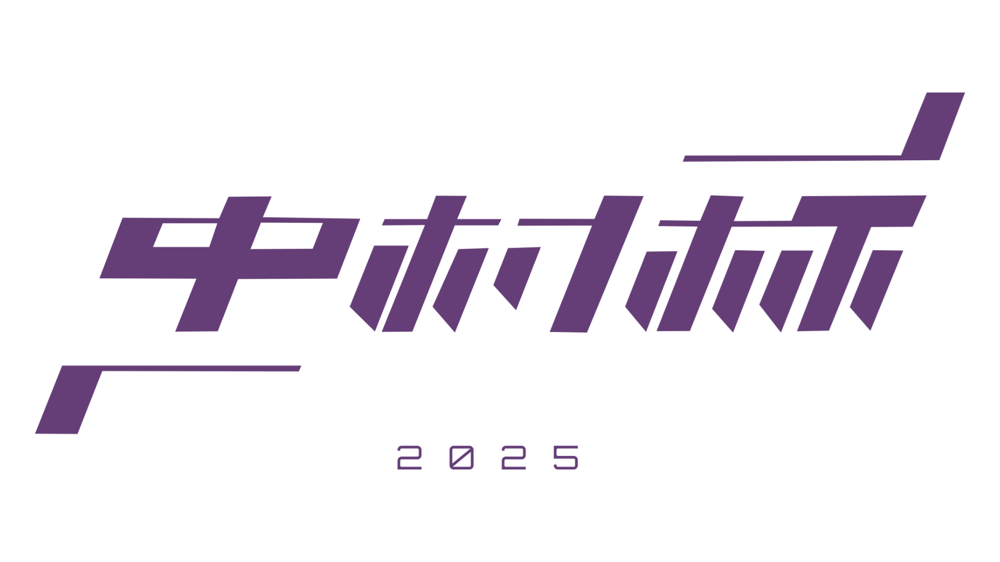

中村杯艦船模擬戦2026
作成
マインクラフト艦船界隈と不特定多数の視聴者を繋ぐ、視聴者参加型イベント！
参加者の艦船をじっくり紹介し、視聴者が愛着を持てるように工夫。
投稿時期が予め決まっているから安心！
※今回はペングイーーん氏との共同開催ではありません。
スケジュール
| 応募開始 | 2026-07-20 12:00 |
| 応募締め切り | 2026-09-07 12:00 |
| 準々決勝 投稿 | 年末ごろ |
| 準決勝・決勝 投稿 | 年末ごろ |
概要
趣旨
参加者の皆様の作品を動画内で紹介することにより、マイクラ軍事部造船勢の存在を内外に認知して頂き、この業界の活性化につなげる事。
応募資格
マインクラフトjava版1.7.10をプレイしたことがある方
※爆風関係の仕様が異なるため、BE版からの参加はできません。
※YouTubeチャンネルやSNSアカウントは不要です。連絡先の記入は任意です。
大会の流れ
- マインクラフトjava版1.7.10で動作するTNTキャノンを搭載した艦船を視聴者の皆様から募集し、勝負させる。
- 最大８隻（８人）のトーナメントとし、応募者多数の場合は造形により参加者を選抜する。ただし、造形の拮抗する場合は枠を拡大して予選を行う可能性あり。※中村は参加しない。
- 大会の模様を動画化し、YouTubeに投稿する。
※応募者が3名以下の場合は中止とします。
選抜の基準
- 主として、シルエット、船体造形、装飾の3区分を評価する。
- 外観が明らかに艦船であること。（飛行船等は不可）（潜水艦も不可）
- 砲塔が船体に対して大きすぎないこと。
※喫水線下の造形は問わない。
試合の流れ
- 試合の組み合わせはランダムで決定する
- 先攻はランダムで決定する。
- 交戦距離は首尾線間200ブロックとし、東西方向に射撃する。※前後の位置関係は船体中央を基準とする。
- 3回ずつ射撃した後、位置と先攻を入れ替えて次のセットに移行する。
勝敗の決定
- 相手の全兵装を使用不能にする、又は3回射撃した時点で射撃可能な砲の割合が大きい方が1セット取得し、2セット先取で勝利とする。
- 3セット目以降は、双方が無傷の場合に、状況に応じて追加で射撃する。勝敗が決まる様子が無ければサドンデスにより勝ち抜く者を決定する。
サドンデス：同一の目標に対して射撃し、多くのブロックを破壊した方の勝利とする。
試合の流れに関する補足事項
- TNT付きトロッコはスタック可能
- ゲームの難易度はピースフルとする。
- 描画距離は32chunkとする。
- 使用するMODはHACとOptiFineのみ。
レギュレーション
性能に関して
- 攻撃手段としてTNTキャノンを使用すること。
- 片舷斉射時の最大弾頭数が250個以下であること。※副砲、及び固定兵装も使用可能であり、主砲とのルール上の差異は無いものとする。
防御に関して
- 爆発耐性が石レンガを超えるブロック（エンド石・金床を含む）を装甲として使用しないこと。ただし、金床は装飾として少量使用してもよい。
- 水流、又は溶岩を装甲として使用しないこと。
- 回路に関係するブロックを水面下に配置しないこと (New)
大きさに関して
- 全長が350ブロック以下であること。
- 全幅が50ブロック以下であること。
- 総ブロック数が12万個以下であること。
操作方法に関して
- ボタンを押す等一回の動作で一回斉射できること。※暴発防止等の目的で各門がタイミングをずらして射撃することは可。
- 同一の砲が1ターンに二回以上射撃しないこと。
- 兵装選択、パラメーター設定、及び発射のほかに必要な操作がないこと。（収録時間短縮のため）※射撃にあたってブロックの再設置が必要なものや、低確率に不具合が発生し、それを修復する必要があるもの等も不可。
※耐水弾は使用不可。
※兵装選択が必要な場合、兵装選択の操作方法は自由。
※本大会の趣旨を大きく逸脱する作品は、レギュレーションに違反がなくとも参加を拒否する可能性があります。
データ（.schematic）化
データ（.schematic）化の方法
外部ツール、MCEditを使用します。このツールの使用方法は 第一回大会の募集動画 で詳しく解説しています。 また、公式ブログの MCEditの使い方の解説記事 でも解説しています。
データ（.schematic）化時のお願い
- 艦首を南にしてください
- 弾薬となるTNTを予めディスペンサー等に入れてください
- データ（.schematic）化範囲の空間の内、喫水線より下は水で埋めてください（喫水線位置の判断のため）
- 可能な場合は、試合で使用する兵装を予め選択してください（不可能なら看板等に書いてください）
- データ（.schematic）化は艦を収められる最も小さい範囲で行い、余分な空間を入れないでください（中心位置の判断のため）
応募
応募方法
- 下記応募フォームをお送りください。記入内容は、応募者と作品に関する説明、作品の操作方法です。
- 応募される艦の.schematicデータは、フォームからアップロードできます。従来の共有ストレージを使用した方法も可能です。
- フォームの書き直しや、作品に修正がある場合はフォームを同じ名義で二度送信してください。
※フォームの記入内容の大半は任意です。
オンライン共有ストレージへアップロードする場合
- 応募される艦の.schematicデータをGoogle Drive あるいはdropbox等のオンライン共有ストレージにアップロードしてください。
- アップロードしたファイルをURLで共有し、そのURLを応募フォームに貼付けて下さい。
※上記以外のオンライン共有ストレージサービスもご利用になれますが、受け取り側がログイン不要なサービスをご利用ください。
不備等を発見したとき
- レギュレーション違反や動作試験において不具合が見つかった場合は、任意で記入いただいた連絡先に再応募の案内を差し上げます。
- 再応募の期限は案内を差し上げた日の翌週となります。これを過ぎると出場をキャンセルします。
- 再応募に不具合が見つかった場合は原則として失格となります。
※応募期限を過ぎても、主催側の都合によっては受理できる可能性があります。
※失格の条件を満たしても、主催側が勝手に修復可能な場合は受理できる可能性があります。
※本番中に自爆等の不具合を発見した場合は、主催側が勝手に修復可能な場合は修復し、不可能なら敵により撃破されたものと同等に扱います。
マルチプレイ
今回は、交流目的のサバイバルサーバーのみ運用します。ワールドは去年と同じものです。
- アドレス: micramulti.nnz-design.com
- motd: Nakamura Server
- バージョン: 1.21.11
お知らせがあればここに随時追記します。
応募フォーム（Google Forms）でプレイヤー名を申請していただくとホワイトリストに追加されます。過去に参加者向けサーバーに応募された方はすでに登録されています。登録されても、通知などは特に届きませんので、実際にアクセスして確かめてください。